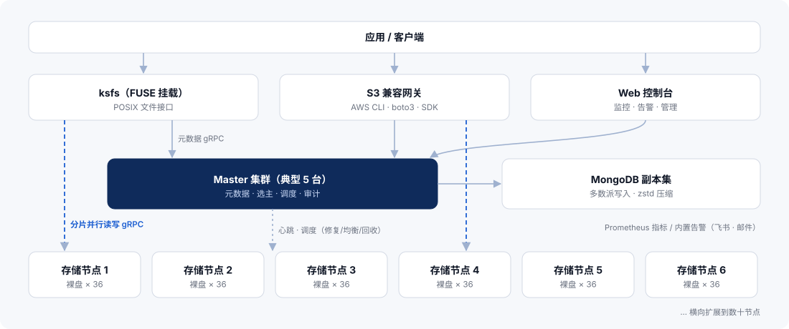
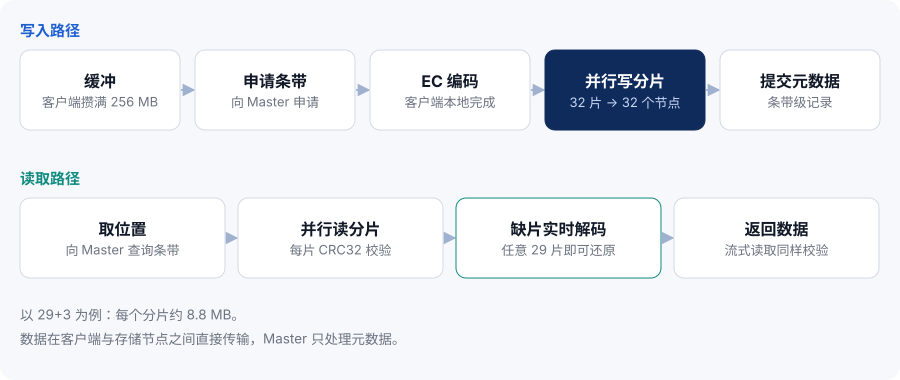
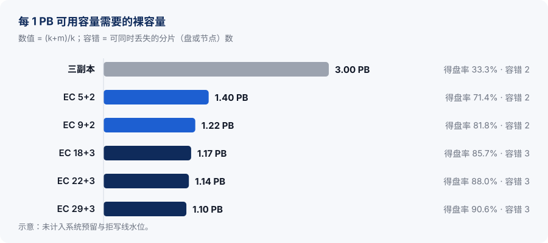
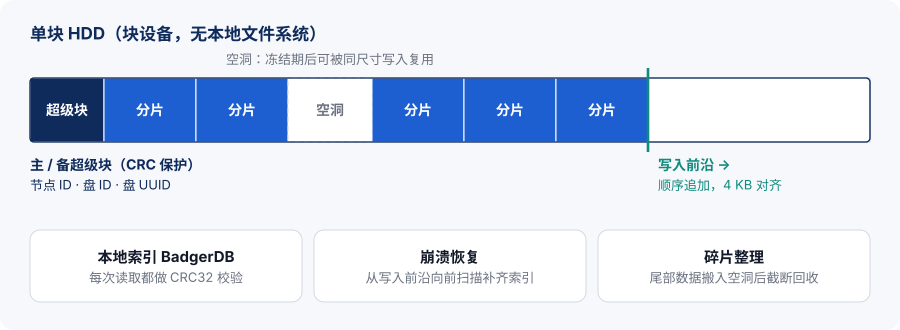
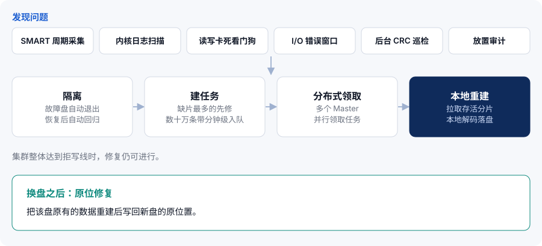

1摘要
KDSS 是一套面向 PB 级数据的分布式存储系统。它用 Reed-Solomon 纠删码代替多副本提供冗余，用裸盘直写引擎代替本地文件系统管理磁盘，同时提供 POSIX 文件挂载（FUSE 客户端 ksfs）与 S3 兼容接口，并内置 Web 管理控制台和告警系统。
KDSS 的设计围绕三个目标：
- 低成本。纠删码得盘率最高可达 91.2%（31+3）；按集群规模自动选型的 29+3 档位得盘率 90.6%，同等可用容量所需的裸容量约为三副本的 37%。存储引擎直接顺序追加写入块设备，减少寻道，有利于延长硬盘寿命。
- 高可靠。同一条带的分片绝不落在同一节点；29+3 下任意 3 个分片同时丢失，数据仍可读、可重建。每次读取都做 CRC32 校验，后台持续巡检与放置审计；磁盘健康四层监测，发现故障自动隔离，修复由存储节点在本地完成。
- 易运维。滚动升级不停服（默认逐台）；Web 控制台提供集群、节点、磁盘与容量视图，实时给出“当前最大可写 / 保守可写”；内置 P0/P1/P2 分级告警，可推送飞书（Lark）与邮件，并提供 Prometheus 全量指标。
生产验证
KDSS 已在多个生产集群长期运行：累计部署规模近 190 PB，300 余个存储节点、1.1 万余块数据盘，管理数亿条带。生产环境中约 99% 的读写通过 FUSE 挂载完成。
关于本文
本文面向需要评估或部署 KDSS 的架构师、运维工程师与技术决策者，介绍系统架构、纠删码与数据布局、存储引擎、可靠性机制、访问接口、运维与安全能力，并给出容量规划方法与推荐硬件配置。文中所述能力与参数对应版本 26.11.2。
2海量数据存储面临的挑战
数据量进入 PB 级以后，存储系统的主要矛盾从“能不能存下”变成“能不能长期、便宜、可靠地存下，并且管得过来”。
2.1冗余成本
多副本是最直观的冗余方式，但三副本的得盘率只有约 33%：每存 1 PB 数据要买 3 PB 磁盘，机柜、电力和运维成本随之放大。对需要保存多年的数据，这部分成本会持续累积。
2.2规模带来的故障常态化
集群有成千上万块盘时，坏盘、慢盘、节点掉线不再是偶发事件，而是日常。系统需要能同时容忍多块盘或多个节点故障，并在无人值守的情况下快速发现、隔离并修复；还要防范不报错的静默数据损坏，以及错误路由导致读到别的数据。
2.3磁盘与本地文件系统的开销
在本地文件系统上存放海量大文件，会引入额外的元数据更新、随机写与碎片。对大容量 HDD 来说，寻道次数直接影响吞吐，也影响长期运行下的磁盘健康。
2.4运维与容量管理
升级要不要停服、还能写多少、哪块盘快坏了、告警发给谁——这些问题在小集群里靠人工可以应付，到了数十节点、上千块盘时必须由系统给出确定的答案。容量估算尤其容易失真：剩余空间之和并不等于真正可写入的容量。
2.5接入方式
一部分应用按文件读写，需要 POSIX 语义；另一部分应用面向对象存储开发，需要 S3 接口。同一份数据最好在一套系统内同时满足两类访问。
| 挑战 | KDSS 的做法 | 详见 |
|---|---|---|
| 冗余成本高 | Reed-Solomon 纠删码，得盘率 71.4%–91.2%，按节点数自动选型 | 第 5 章 |
| 多盘、多节点同时故障 | 分片强制跨节点放置；3 校验档位容忍任意 3 个分片同时丢失 | 第 5、7 章 |
| 静默损坏与错误路由 | 每次读取 CRC32 校验；读路径核对条带 ID 与分片序号；后台巡检 | 第 6、7 章 |
| 文件系统开销与磁盘寿命 | 裸盘直写、顺序追加、4 KB 对齐；空洞复用与碎片整理 | 第 6 章 |
| 故障发现与修复靠人工 | 四层健康监测、自动隔离与恢复、存储节点本地重建、原位修复 | 第 7 章 |
| 升级停服、容量不透明 | 滚动升级不停服；控制台实时显示当前最大可写 / 保守可写 | 第 9 章 |
| 文件与对象两类访问 | FUSE 客户端 ksfs 提供 POSIX 挂载；S3 兼容网关 | 第 8 章 |
3KDSS 概述
KDSS 把冗余、落盘、访问与运维四个层面做成一个整体：纠删码决定成本与容错，裸盘引擎决定磁盘效率与数据校验，FUSE 与 S3 决定接入方式，控制台与告警决定能否长期稳定运营。
3.1产品定位
KDSS 适合容量大、以大文件为主、需要长期保存的数据：去中心化存储的封装数据、冷数据归档、视频与媒体素材、备份副本、AI 与大数据的原始数据等。它以 256 MB 的数据块为单位组织条带，按条带记录数据位置（另有目录与文件元数据），因此在 PB 级规模下元数据规模依然很小。
3.2核心指标
| 项目 | 指标 |
|---|---|
| 冗余方式 | Reed-Solomon 纠删码（klauspost/reedsolomon，SIMD 加速） |
| 纠删码档位 | 自动：5+2、9+2、18+3、29+3；手动高密度：19+3、21+3、22+3、31+3、31+2 |
| 得盘率 | 5+2 为 71.4%，29+3 为 90.6%，31+3 为 91.2% |
| 容错能力 | 3 校验档位：任意 3 个分片（盘或节点）同时丢失仍可读、可重建 |
| 条带粒度 | 256 MB 数据块 = 1 条条带；29+3 下每个分片约 8.8 MiB |
| 集群规模 | 最小 8 节点（5+2）；单集群约 18 PB 裸容量（36 节点 × 36 块 14 TB 盘） |
| 存储引擎 | 裸盘直写，顺序追加，4 KB 对齐；双超级块；BadgerDB 本地索引 |
| 数据校验 | 每次读取 CRC32 校验（含流式读取）；后台 CRC 巡检，默认 20 MB/s/节点 |
| 访问接口 | FUSE 客户端 ksfs（POSIX 挂载）；S3 兼容网关 |
| 运维与高可用 | 滚动升级不停服；Master 多副本 + MongoDB 副本集；内置告警与 Prometheus 指标 |
3.3设计原则
大条带、少元数据
以 256 MB 为条带粒度，按条带记录数据位置（另有目录与文件元数据），元数据规模小、随数据量缓慢增长。
数据不经过 Master
客户端本地编码，直接与存储节点并行读写分片；Master 只负责元数据、选主与调度。
故障是常态
检测、隔离、修复、巡检全部自动化；修复在集群写满拒写后仍可进行。
保守的默认值
纠删码按节点数自动选择保守安全的档位；fsync 默认每次写入都落盘。
3.4版本与技术栈
KDSS 的版本号采用 CalVer（YY.MM.PATCH），本文对应 26.11.2。技术栈：Go、gRPC + Protocol Buffers、MongoDB、klauspost/reedsolomon、hanwen/go-fuse、BadgerDB、Gin、Vue 3 + Element Plus、Zap、Prometheus client。
4系统架构
KDSS 由接入层（ksfs、S3 网关、Web 控制台）、控制层（Master 集群与 MongoDB 副本集）和数据层（存储节点）组成。数据在客户端与存储节点之间直接传输，Master 只处理元数据和调度。

4.1组件
| 组件 | 职责 | 服务端口 |
|---|---|---|
| Master | 元数据管理、选主；调度修复、均衡、GC 与放置审计 | gRPC 6700，指标 6701 |
| Storage | 裸盘读写、本地重建、磁盘健康监测 | gRPC 6800，指标 6801 |
| MongoDB 副本集 | 保存 inodes、dentries、stripes、nodes、buckets 等集合；zstd 压缩，多数派写入 | — |
| ksfs | FUSE 客户端，POSIX 挂载；客户端侧 EC 编解码 | — |
| S3 网关 | S3 兼容接口，面向对象存储应用 | 9000 |
| Web 控制台 | 集群管理、监控、告警、用户与权限 | 8081 |
4.2元数据
文件系统命名空间（inodes、dentries）、条带位置（stripes）、节点信息（nodes）与 Bucket（buckets）保存在 MongoDB 副本集中，开启 zstd 压缩，写入采用多数派确认。由于条带粒度为 256 MB，1 PB 数据只对应约 400 万条条带记录，元数据规模与数据规模之间相差数个数量级。
4.3写入与读取数据流

写入
- 缓冲：ksfs 在客户端把写入数据缓冲到 256 MB。
- 申请条带：向 Master 申请一条新条带及其分片位置。
- 本地编码：在客户端完成 EC 编码，例如 29+3 生成 29 个数据分片和 3 个校验分片。
- 并行写入：32 个分片并行写到 32 个不同的存储节点。
- 提交元数据：数据分片全部写入且至少一个校验分片成功后，向 Master 提交条带元数据；缺少的分片由修复补齐。
读取
- 定位：向 Master 获取条带的分片位置。
- 并行读取：从各存储节点并行读取分片，每个分片都做 CRC32 校验。
- 实时重建：若有分片缺失，用其余分片实时解码还原数据。
4.4控制面高可用
Master 以多副本部署（典型 5 台），借助 MongoDB 副本集选主；Leader 故障时自动切换，客户端的写请求会被自动重定向到当前 Leader。
5纠删码与数据布局
纠删码把 k 个数据分片编码出 m 个校验分片，k+m 个分片中任意 k 个即可还原原始数据。KDSS 采用 Reed-Solomon 编码，基于 klauspost/reedsolomon 实现并使用 SIMD 加速。
5.1档位与得盘率
KDSS 按集群节点数自动选择档位，默认偏保守；在明确评估容错需求后，也可手动选择更高密度的档位。得盘率 = k / (k+m)。
| 档位（k+m） | 得盘率 | 可同时丢失分片 | 最少节点数 | 选型方式 |
|---|---|---|---|---|
| 5+2 | 71.4% | 2 | 8 | 自动 小规模起步 |
| 9+2 | 81.8% | 2 | 12 | 自动 |
| 18+3 | 85.7% | 3 | 22 | 自动 |
| 29+3 | 90.6% | 3 | 33 | 自动 大规模推荐 |
| 19+3 | 86.4% | 3 | 23 | 手动 高密度 |
| 21+3 | 87.5% | 3 | 25 | 手动 高密度 |
| 22+3 | 88.0% | 3 | 26 | 手动 高密度 |
| 31+3 | 91.2% | 3 | 35 | 手动 高密度 |
| 31+2 | 93.9% | 2 | 34 | 手动 容错下降，谨慎使用 |
注：19+3、21+3、31+2 的得盘率按 k/(k+m) 计算。表中最少节点数均为条带宽度 k+m 再加 1。
5.2与三副本的成本对比
在相同可用容量下，29+3 所需的裸容量约为三副本的 37%，同时容错能力从 2 提高到 3。

5.3条带布局
一个 256 MB 的数据块构成一条条带。以 29+3 为例，数据块被切成 29 个约 8.8 MiB 的数据分片，再计算出 3 个校验分片，共 32 个分片写到 32 个不同节点上。大粒度条带让每次磁盘 I/O 都足够大，也让数据位置只需按条带记录，元数据规模小。
5.4放置约束与审计
容错能力成立的前提是同一条带的分片互不同节点：否则一个节点故障就可能带走多个分片。KDSS 把这条约束作为硬规则执行：
- 三条路径强制校验。写入、修复、均衡三条会产生分片的路径，在选择目标节点时都强制检查同条带分片不落在同一节点。
- 后台全量放置审计。Master 在后台持续巡检全部条带的放置情况，作为对前三道校验的独立复核。
6裸盘存储引擎
存储节点直接读写块设备，绕过本地文件系统。分片以顺序追加的方式写入磁盘，配合本地索引定位，每次读取都做校验。
6.1顺序追加写
分片按 4 KB 对齐，从写入前沿顺序追加。相比在文件系统上维护大量文件，这种方式省去了文件系统元数据的随机更新，磁头寻道更少：吞吐更稳定，有利于延长硬盘寿命。

6.2超级块与盘身份
每块盘有主、备两份超级块，均受 CRC 保护。超级块记录盘的身份：节点 ID、盘 ID 与盘 UUID。存储节点启动时据此识别每块盘：盘换了槽位或盘符变化，会自动识别并纠正；如果接上的是不属于本节点的盘，节点拒绝启动，避免把数据写到错误的盘上。
6.3本地索引与数据校验
分片在盘上的位置由本地 BadgerDB 索引维护。每次读取都做 CRC32 校验，流式读取同样校验。读取时若有分片缺失，客户端用其余分片实时解码重建，读请求不因单个分片异常而失败。
6.4崩溃恢复
| 场景 | 行为 |
|---|---|
| 干净关机 | 秒级启动 |
| 异常断电 | 从写入前沿向前扫描，补齐断电前未进入索引的记录 |
| 压缩 / 整理中断 | 可整盘重建本地索引 |
| 多盘节点 | 所有磁盘并行打开 |
6.5fsync 策略
| 策略 | 说明 |
|---|---|
| immediate（默认） | 每次写入都落盘后再确认 |
| batch | 组提交，多次写入合并一次落盘 |
| deferred | 后台每 5 秒落盘，断电可能丢失最近约 5 秒的写入；适合有掉电保护（如带 BBU 的阵列卡）且可接受该窗口的场景 |
6.6空洞复用与碎片整理
删除是软删除：数据先进入回收站，经过可配置的冻结期后，所占空间才成为可复用的空洞。新写入的分片可以直接填入同尺寸的空洞——采用精确尺寸匹配，不切割空洞，避免产生碎片。
碎片整理把盘尾部的数据搬入空洞，然后截断回收尾部空间。整个过程崩溃安全；每次搬移后逐片回读校验；对外的元数据零改动，上层无感知。
6.7三级容量保护
磁盘接近写满时，系统分三级逐步收紧写入，保证修复始终有空间可用，已有数据不受影响：
7可靠性与自愈
KDSS 把可靠性拆成三件事：尽早发现问题、阻止问题扩散、尽快恢复冗余。所有环节默认自动运行，无需人工介入。

7.1四层磁盘健康监测
| 层次 | 作用 |
|---|---|
| SMART 周期采集 | 定期读取磁盘 SMART 信息，掌握长期健康趋势 |
| 内核日志快速扫描 | 及时捕获内核报告的磁盘错误；经去抖确认，避免偶发日志误判 |
| 读写卡死看门狗 | 读请求超过 120 秒、写请求超过 300 秒未返回即判定卡死 |
| I/O 错误滑动窗口 | 按时间窗口统计 I/O 错误，超过阈值自动隔离，恢复正常后自动解除 |
7.2存储节点本地重建
分片缺失后，修复由存储节点在本地完成：节点拉取同条带的存活分片，本地解码并直接落盘，减少数据中转。修复任务的组织方式：
- 最劣先修。按条带缺失的分片数排序，缺得最多、离丢数据最近的条带最先修复。
- 批量入队。修复任务批量创建，数十万条带可在分钟级完成入队。
- 分布式领取。多个 Master 分布式领取修复任务。
- 写满也能修。集群达到拒写线后停止新写入，但修复照常进行。
7.3原位修复
更换故障盘后，KDSS 可以把原盘上的数据重建并写回新盘的原位置。
7.4读路径身份校验
每次读取都携带条带 ID 与分片序号进行核对，防止因错误路由读到别的条带的数据。它与 CRC 校验互为补充：CRC 保证数据本身没有损坏，身份校验保证读到的是正确的数据。
7.5后台 CRC 巡检
后台巡检会周期性地读取并校验盘上分片，主动发现长期未被访问的数据中的静默损坏。巡检可限速（默认每节点 20 MB/s），周期可调，避免影响业务读写。
7.6回收站与两阶段 GC
误删的数据可以从回收站恢复。垃圾回收分两个阶段执行，并设有可配置的保留窗口。另提供孤儿分片只读对账工具，用于核对盘上分片与元数据是否一致，本身不修改任何数据。
7.7数据均衡
- 跨节点均衡（显式触发）。按偏离均值的阈值挑选源节点，按条带的空闲节点集合挑选最空的目标；搬迁前双重查重，元数据更新采用版本 CAS，避免并发冲突与重复搬迁。均衡同样受放置约束校验。
- 节点内盘间均衡。在同一节点的多块盘之间平衡用量。
8访问接口
KDSS 提供两种访问方式：FUSE 客户端 ksfs 提供 POSIX 文件挂载，S3 兼容网关面向对象存储应用。生产环境中约 99% 的读写通过 FUSE 完成。
8.1FUSE 客户端 ksfs
- 以 POSIX 文件系统挂载，现有应用无需改造即可读写。
df -h显示集群的真实容量。- 支持 fsync 持久化。
- 读写缓冲、并发度与限速均可调。
- 客户端本地完成 EC 编码，写入时可并行做 EC 校验。
8.2S3 兼容网关
S3 网关兼容核心 S3 API（见下表）；已验证客户端：AWS CLI、boto3、s3cmd（按文档配置）。请求使用 AWS SigV4 签名，客户端使用路径风格（path-style）访问，region 填 us-east-1。大对象采用流式读写：64 MB 以内缓冲处理，超过则按 64 MB 分段流式传输，内存占用可控。
| 类别 | API |
|---|---|
| Bucket | ListBuckets、CreateBucket、DeleteBucket、HeadBucket、ListObjectsV2 |
| 对象 | PutObject、GetObject（含 Range）、HeadObject、DeleteObject、CopyObject |
| 分段上传 | CreateMultipartUpload、UploadPart、CompleteMultipartUpload、AbortMultipartUpload、ListParts、ListMultipartUploads |
# 访问密钥在 Web 控制台创建；<gateway> 为 S3 网关地址
aws --endpoint-url http://<gateway>:9000 s3 mb s3://archive
aws --endpoint-url http://<gateway>:9000 s3 cp ./dataset.tar s3://archive/2026/dataset.tar
aws --endpoint-url http://<gateway>:9000 s3 ls s3://archive/2026/
import boto3
from botocore.config import Config
s3 = boto3.client("s3", endpoint_url="http://<gateway>:9000",
aws_access_key_id="<ACCESS_KEY>", aws_secret_access_key="<SECRET_KEY>",
region_name="us-east-1", config=Config(s3={"addressing_style": "path"}))
s3.upload_file("dataset.tar", "archive", "2026/dataset.tar") # 大文件自动走分段上传
obj = s3.get_object(Bucket="archive", Key="2026/dataset.tar", Range="bytes=0-1048575")
8.3如何选择
按文件路径读写、需要 POSIX 语义与 fsync 的程序，以及批量落盘、大文件顺序读写，优先使用 FUSE（ksfs）。面向对象存储开发的应用、跨网络的上传下载、已有 S3 工具链的备份与归档流程，使用 S3 网关。
9运维与可观测
KDSS 内置运维所需的主要工具：管理控制台、容量面板、指标与告警，以及不停服的滚动升级流程。
9.1Web 管理控制台
控制台基于 Vue 3 + Element Plus，主要功能包括：
集群视图
集群、节点、磁盘的状态与用量
容量面板
当前最大可写、保守可写、回收站
数据管理
Bucket、访问密钥、文件浏览
告警
告警规则与通知渠道、告警历史
审计
操作审计日志
用户
多用户与角色权限管理
9.2可写容量
在纠删码集群中，“剩余空间之和”并不等于“还能写多少”：一条 29+3 条带需要 32 个不同节点同时有空间，部分盘写满或退出写入环后，实际可写容量会低于剩余空间。控制台因此直接给出两个值：当前最大可写与保守可写，作为扩容与调度决策的依据，并在可写节点不足时告警。

9.3指标与告警
- Prometheus 指标：全量指标位于
kdss_*命名空间，/metrics支持 Bearer 令牌认证；随版本提供 63 条告警规则模板。 - 内置告警系统：P0 / P1 / P2 分级，支持去抖与提醒间隔，推送到飞书（Lark）与邮件，保留告警历史。
- 内置规则：覆盖可写节点不足、容量、磁盘故障、MongoDB 存活等。
9.4滚动升级不停服
升级默认逐台进行，每台节点经过以下步骤：
- 进入维护模式（cordon）：该节点不再接收新的写入。
- 等待在途写入清零：已开始的写入全部完成。
- 替换：替换程序并重启。
- 验证：确认节点状态正常。
- 退出维护：节点恢复接收写入，继续下一台。
9.5高可用
Master 多副本部署（典型 5 台），与 MongoDB 副本集（多数派写入）共同完成选主；Leader 切换自动进行，客户端写请求自动重定向到 Leader。存储节点故障由纠删码冗余覆盖，并触发自动修复。
10安全
KDSS 默认部署在内网，安全机制覆盖管理面的身份与权限、指标接口的访问控制与组件间通信加密。
| 方面 | 机制 |
|---|---|
| 角色权限（RBAC） | 多用户，三种角色：admin（管理员）、storage_admin（存储管理员）、readonly（只读） |
| 登录认证 | JWT 登录；口令以 bcrypt 存储；登录限速与验证码 |
| Web 防护 | CSRF 防护 |
| 审计 | 控制台操作审计日志 |
| S3 访问 | AWS SigV4 签名；Bucket 与访问密钥在控制台创建和管理 |
| 指标接口 | /metrics 支持 Bearer 令牌认证 |
| 组件间通信 | 可选 gRPC mTLS；默认内网部署可关闭 |
10.1部署建议
- 把 Master、Storage 与 MongoDB 部署在隔离的内网中；跨不可信网络通信时启用 gRPC mTLS。
- 按最小权限分配角色：日常查看使用 readonly，存储运维使用 storage_admin，admin 仅用于用户与系统管理。
- 为
/metrics配置 Bearer 令牌，只允许监控系统抓取。
11容量规划与推荐配置
容量规划从三个问题出发：需要多少可用容量、需要容忍几个分片同时故障、有多少台节点。节点数决定可选的纠删码档位，档位决定得盘率。
11.1估算公式
11.2算例
| 配置 | 裸容量 | 档位 | 得盘率 | 可用容量（× 99% 水位） | 容错 |
|---|---|---|---|---|---|
| 8 节点 × 36 盘 | 4,608 TB | 5+2 | 71.4% | ≈ 3,259 TB | 2 |
| 12 节点 × 36 盘 | 6,912 TB | 9+2 | 81.8% | ≈ 5,599 TB | 2 |
| 22 节点 × 36 盘 | 12,672 TB | 18+3 | 85.7% | ≈ 10,753 TB | 3 |
| 33 节点 × 36 盘 | 19,008 TB | 29+3 | 90.6% | ≈ 17,054 TB | 3 |
注：可用容量 = 裸容量 × k/(k+m) × 99%，得盘率按精确值计算（例如 19,008 TB × 29/32 × 99% ≈ 17,054 TB）；未计入系统盘、预留空间与磁盘标称容量和可用容量之间的差异。
11.3规划要点
- 节点数比条带宽度多一台。各档位的最少节点数为 k+m+1，例如 29+3 需要至少 33 个节点。
- 按容错需求选档位。需要容忍 3 个分片同时故障时，选择 18+3 及以上档位；31+2 只适合明确接受容错下降的场景。
- 为维护留余量。滚动升级默认逐台进行，同时维护的节点数上限为 m − 1。
- 关注可写节点数。写入一条条带需要 k+m 个节点同时可写；节点陆续写满时，应在可写节点不足告警之前扩容。
11.4推荐硬件
| 角色 | 配置 |
|---|---|
| 存储节点 | 36 × 16 TB 企业级 HDD（JBOD 直通）；Xeon 20 核级 CPU；64 GB 内存；2 × 10 GbE 绑定（20 Gbps）；系统盘 RAID1 |
| Master | 可与 Storage 混合部署在系统盘为 RAID1 的节点上，典型 5 台 |
| MongoDB | 副本集，部署在 SSD 上 |
| 最小规模 | 8 个节点（5+2） |
12典型场景
KDSS 适合容量大、以大文件为主、写入后长期保存的数据。以下是几类典型场景。
去中心化存储
Filecoin 等痛点
封装后的数据量大、需长期保存，存储成本直接决定收益；数据丢失有经济损失。
方案
封装结果经 FUSE 挂载顺序落盘；高密度纠删码保存；自动修复与巡检保障长期可用。
收益
得盘率可达 90% 以上（29+3 为 90.6%）；多重故障下数据保持完整；POSIX 挂载，现有程序直接使用。
海量冷数据归档
归档痛点
数据多年不读但不能丢；静默损坏在读取时才发现，为时已晚。
方案
纠删码降低长期保存成本；后台 CRC 巡检主动发现损坏并修复；回收站防误删。
收益
长期保存成本低；数据完整性持续可验证。
视频与媒体
媒体痛点
素材文件大、总量增长快，需要高吞吐顺序读写和随机定位读取。
方案
大条带并行读写（FUSE 按 256 MB 条带，S3 大对象按 64 MB 分段）；S3 GetObject 支持 Range 读取；横向扩展节点。
收益
大文件吞吐稳定；文件与对象两种方式访问同一集群。
备份与容灾
备份痛点
备份副本占用大量容量；备份系统本身也要可靠、易管理。
方案
S3 接口对接支持 S3 的备份软件（上线前建议做兼容性验证），大对象分段上传；告警推送到飞书与邮件。
收益
以纠删码代替多副本存放备份；误删先进回收站，多一层恢复机会。
AI 与大数据原始数据湖
数据湖痛点
原始数据集持续增长，既有按文件读取的训练程序，也有按对象访问的数据管道。
方案
FUSE 挂载供计算节点直接读取；S3 接口供数据管道写入与分发。
收益
一套存储同时服务两类访问；容量按节点横向扩展。
私有云对象存储
私有化痛点
希望用通用服务器搭建自有对象存储，并具备完整的管理界面、权限与监控。
方案
部署在自有机房与通用服务器上（JBOD 硬盘）；控制台管理 Bucket、访问密钥与用户，三种角色 RBAC；Prometheus 指标与内置告警。
收益
部署与扩容自主可控；接入现有监控体系；滚动升级，日常维护不打扰业务。
13联系我们
如需了解 KDSS 的部署方案、容量规划或技术细节，欢迎联系我们。
官网：www.kdss.io
本文档描述的功能与参数对应 KDSS 版本 26.11.2。标注“示意”的图表与算例仅用于说明原理，不代表特定部署的实测结果。产品功能可能随版本更新而变化，以实际发布版本为准。
文中提及的第三方名称与商标归各自所有者所有。
© 2026 KDSS. 保留所有权利。